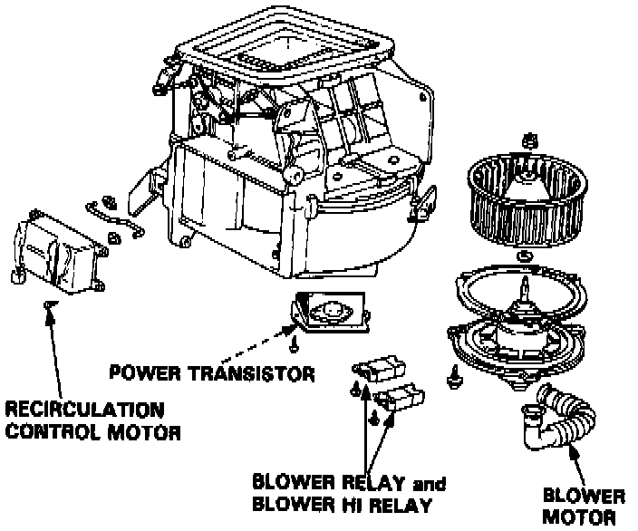
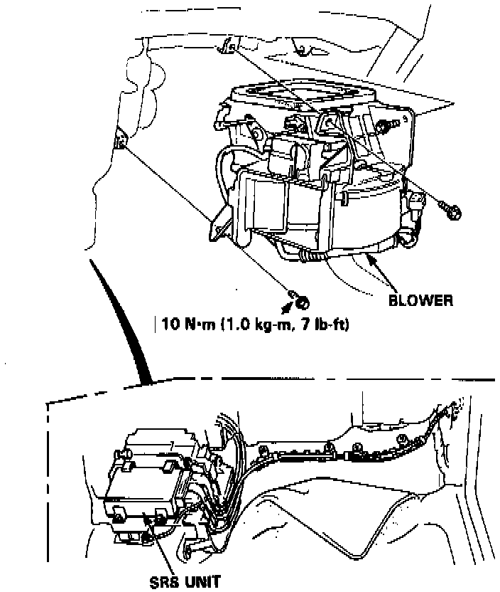
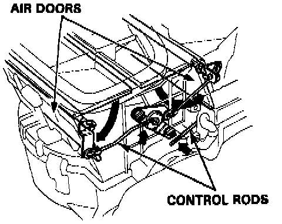

Blower Motor: Service and Repair

BLOWER MOTOR REPLACEMENT
Refer to image for blower motor replacement. If blower motor cannot be removed from Blower (assembly), continue with the following procedures as necessary.
NOTE: SRS wire harness is routed near the blower.
WARNING: All SRS wire harness and connectors are colored Yellow. Do not use electrical test equipment on these circuit.
CAUTION: Be careful not to damage SRS wire harness when servicing the blower.

BLOWER REPLACEMENT
1. Disconnect the battery negative terminal.
2. Remove the screws (3), then remove the glove box lower cover.
3. Remove the screws (2), then remove the glove box.
4. Remove the screws (4) and tapping screws (5), then remove the glove box frame, clips (2), and side heater duct.
5. Recover the refrigerant from the A/C system using a Refrigerant Recovery System.
6. Remove the evaporator.
7. Disconnect the wire connectors from the blower.
8. Remove the mounting bolts (3) from the blower.
9. Remove the blower.
10. Install the blower in the reverse order of removal making sure there is no air leakage.
BLOWER DISASSEMBLY
NOTE:
- Before reassembly, make sure that the air door and linkage moves smoothly without binding.
- When re-attaching the actuator, make sure its positioning will not allow the air door to be pulled too far. Attach the actuator and all linkage, then apply battery voltage and watch the door movement. If necessary, loosen the holding screw and move the actuator up or down.

To adjust the control rod:
Connect the REC control motor connector to the main wire harness, push the FRESH/REC switch to "FRESH" and open the air doors. Then connect the control rod to the arm while holding the air doors open.